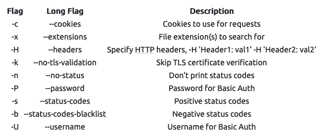
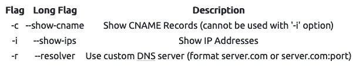

Gobuster
Gobuster Link to heading
List all the “path”/“directory”/subdomains under a website.
Gobuster is written in Go
Installation: sudo apt install gobuster
Useful flags: More Here

Subdomanins:

Listing: gobuster dir
Example command 1 (files and directory): gobuster dir -u http://10.10.10.10 -w /usr/share/wordlists/dirbuster/directory-list-2.3-medium.txt
Example command 2 (files and directory with restriction): gobuster dir -u http://10.10.252.123/myfolder -w /usr/share/wordlists/dirbuster/directory-list-2.3-medium.txt -x.html,.css,.js
Subdomains: gobuster dns , check subdomains against DNS
Example command: gobuster dns -d mydomain.thm -w /usr/share/wordlists/SecLists/Discovery/DNS/subdomains-top1million-5000.txt
subdomains: brute-force virtual hosts: gobuster vhost, check subdomains against hosts (usually identifying the hidden subdomains)
Example command: gobuster vhost -u http://example.com -w /usr/share/wordlists/SecLists/Discovery/DNS/subdomains-top1million-5000.txt
- If this is the subdomain of other top domains